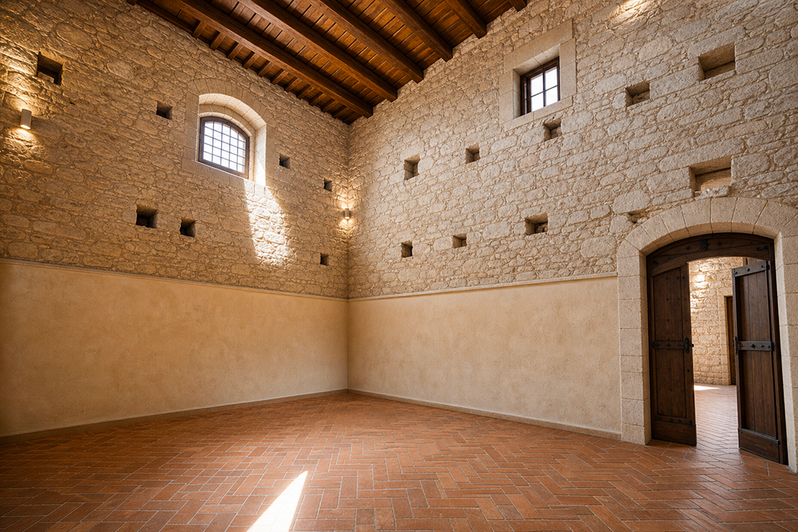
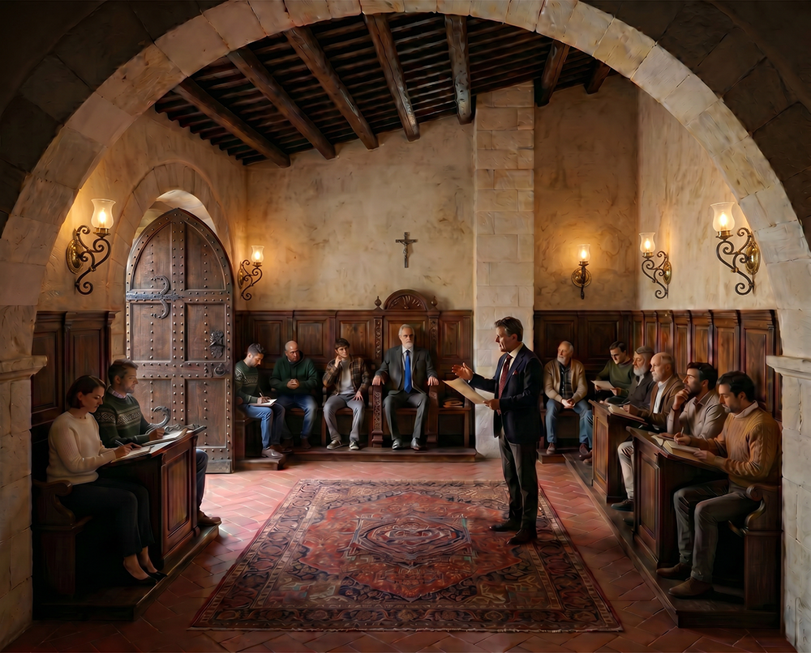
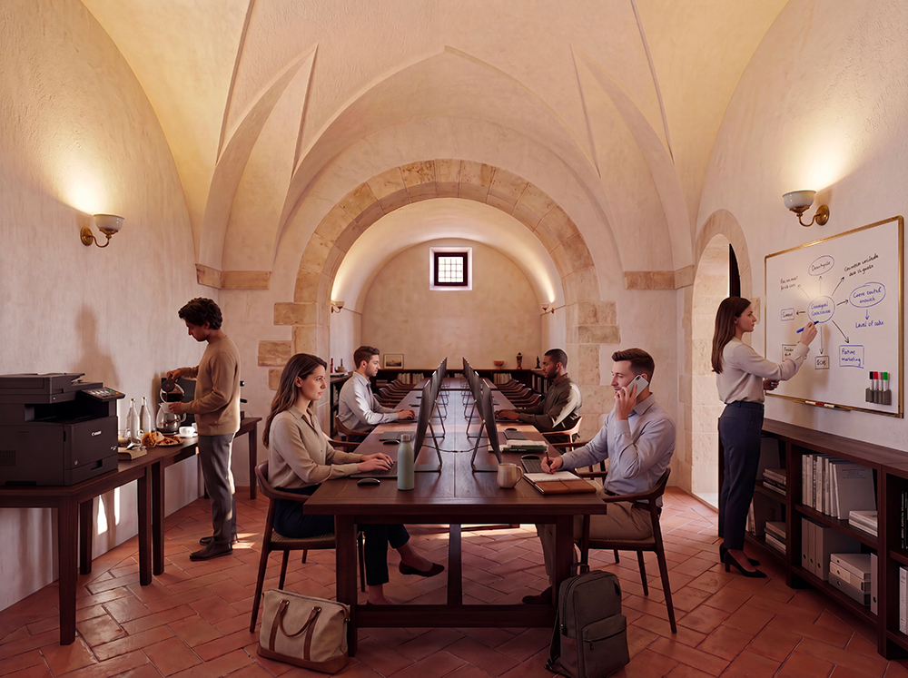

I nostri ambiti

Architettura e cantieri
Restauro filologico del baglio storico, utilizzo di materiali locali e criteri bioclimatici. Ogni intervento è pensato per durare nel tempo e rispettare l’identità del luogo.

Terra e allevamenti
Orto, frutteto, apicoltura e gestione sostenibile del suolo. L’obiettivo è raggiungere una progressiva autosufficienza alimentare e rispettare il ciclo naturale della terra.

Economia e governance
Patti chiari tra i membri, fondi comuni, rendicontazione periodica e regole anti-speculative. La trasparenza economica è alla base della fiducia reciproca.

Artigianato e filiere
Lavoro del legno, della pietra, filiere tessili e trasformazioni alimentari. Valorizziamo i mestieri tradizionali e creiamo opportunità di lavoro all’interno della comunità.

Comunità ed educazione
Processi decisionali partecipati, cura intergenerazionale, attività per bambini e anziani. La comunità è un luogo di apprendimento continuo e di trasmissione di valori.

Lavoro da remoto e connettività
Spazi di coworking rurale e connettività di qualità. Il progetto permette di conciliare vita professionale e qualità della vita in un contesto naturale e comunitario.